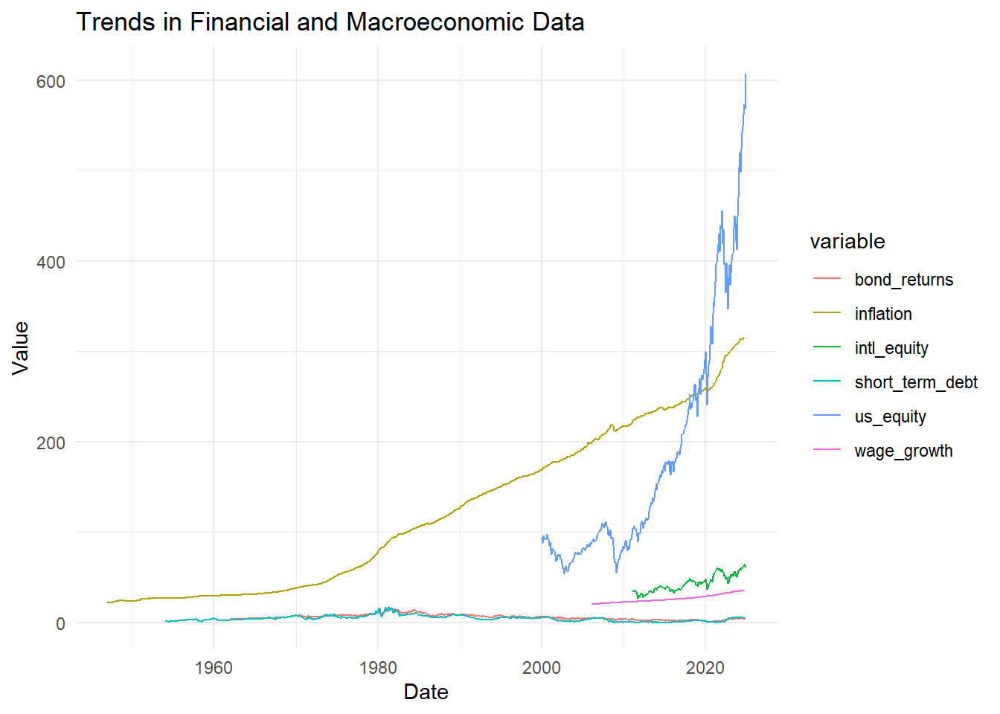
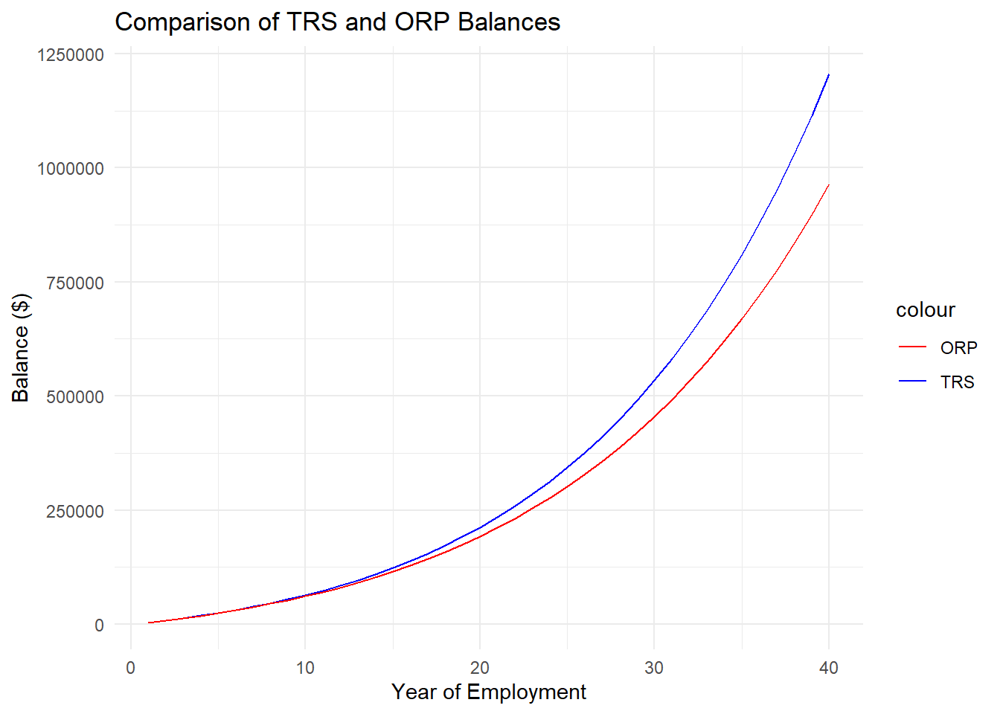
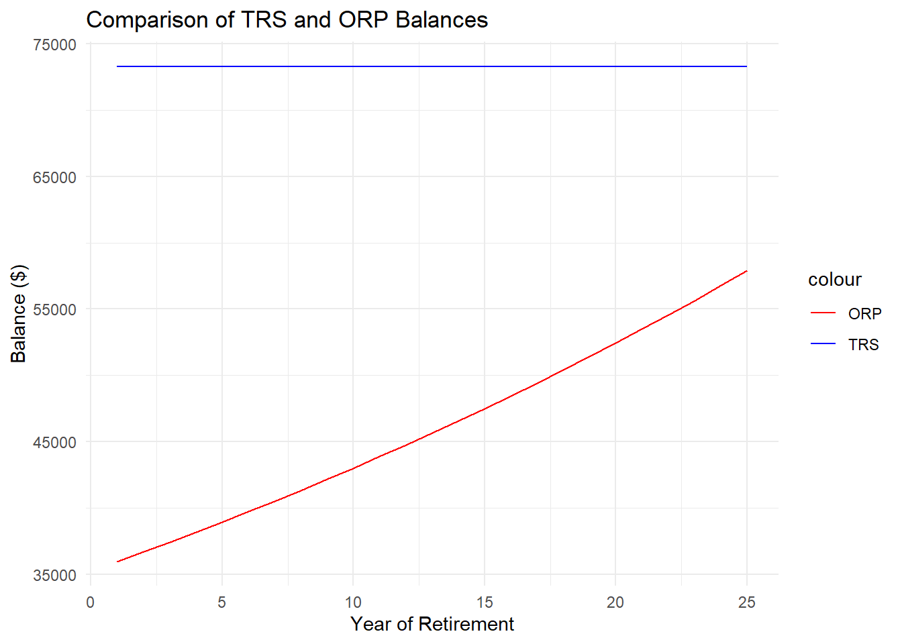
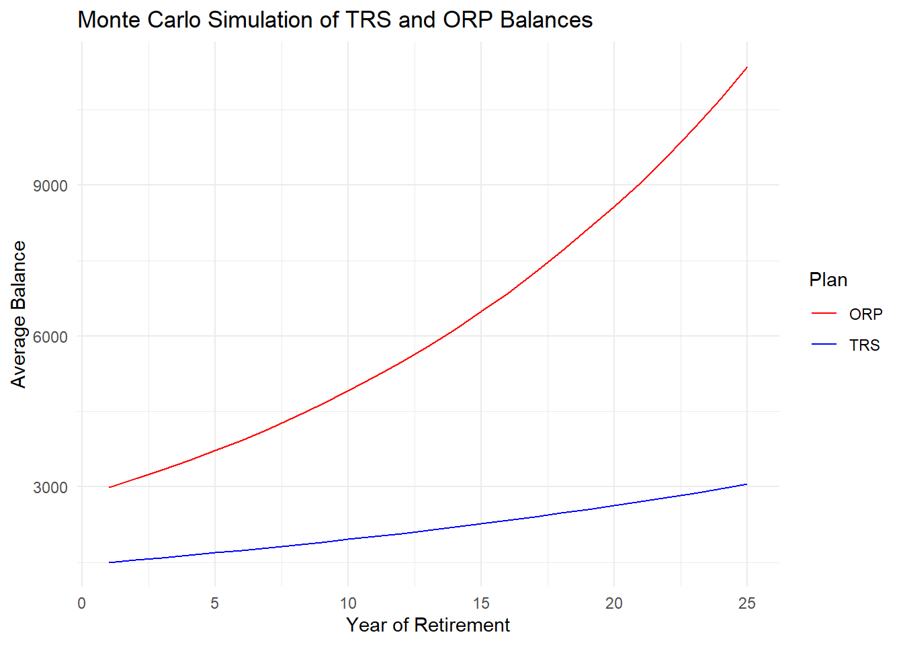

Code
library(httr2)
library(dplyr)
library(lubridate)
library(jsonlite)
library(tibble)
library(readr)
library(ggplot2)
library(tidyr)The purpose of this analysis is to evaluate and compare two retirement plans—Traditional Retirement System (TRS) and Optional Retirement Plan (ORP)—to assess their long-term performance and sustainability. Retirement planning is a critical aspect of financial well-being, and understanding the implications of different contribution, withdrawal, and return strategies can help guide better decision-making.
This project involves leveraging historical data and applying a combination of deterministic and probabilistic models, such as Monte Carlo simulations, to compare the outcomes of the TRS and ORP plans. Key tasks include:
Historical Analysis: Using wage growth and inflation data to simulate realistic scenarios over the working and retirement phases.
Plan Comparisons: Assessing the accumulation of balances under TRS and ORP across the span of employment years.
Retirement Sustainability: Evaluating whether ORP balances can sustain retirees throughout their expected lifespan, comparing guaranteed incomes and withdrawal strategies.
Monte Carlo Simulations: Introducing variability and uncertainty into the analysis to explore distributions of outcomes under different economic scenarios.
The analysis culminates in a comparison of these plans, focusing on critical metrics such as income stability, plan sustainability, and potential gaps in financial outcomes. This report aims to provide actionable insights for individuals and policymakers navigating retirement planning decisions.
library(httr2)
library(dplyr)
library(lubridate)
library(jsonlite)
library(tibble)
library(readr)
library(ggplot2)
library(tidyr)
The first step in this analysis is to establish access to external data sources by securely reading API keys. These keys allow us to fetch historical financial and economic data from trusted platforms, forming the foundation for the analysis of retirement plans. By organizing this data pipeline, we ensure reproducibility and accuracy in subsequent analyses.
api_key <- readLines("alphavantage_key.txt")
fred_api_key <- readLines("fred_key.txt")This task involves acquiring historical financial and economic data, including wage growth, inflation rates, and other relevant metrics. Using API integrations, we fetch data from platforms such as FRED and Alpha Vantage. This step is critical for creating a realistic framework to simulate retirement scenarios and plan performance over time.
# Set API URLs
FRED_URL <- "https://api.stlouisfed.org/fred/series/observations"
ALPHAVANTAGE_URL <- "https://www.alphavantage.co/query"
# Read API keys
fred_api_key <- readLines("fred_key.txt")
alphavantage_api_key <- readLines("alphavantage_key.txt")
# Fetch Wage Growth Data (FRED API)
req_wage <- request(FRED_URL) |>
req_url_query(
series_id = "CES0500000003", # Total Private Average Hourly Earnings
api_key = fred_api_key,
file_type = "json"
)
response_wage <- req_perform(req_wage)
wage_growth_data <- resp_body_json(response_wage)$observations
wage_growth_df <- do.call(rbind, lapply(wage_growth_data, as.data.frame)) %>%
mutate(date = as.Date(date), value = as.numeric(value)) %>%
rename(wage_growth = value)
# Fetch Inflation Data (FRED API)
req_inflation <- request(FRED_URL) |>
req_url_query(
series_id = "CPIAUCSL", # Consumer Price Index for All Urban Consumers
api_key = fred_api_key,
file_type = "json"
)
response_inflation <- req_perform(req_inflation)
inflation_data <- resp_body_json(response_inflation)$observations
inflation_df <- do.call(rbind, lapply(inflation_data, as.data.frame)) %>%
mutate(date = as.Date(date), value = as.numeric(value)) %>%
rename(inflation = value)
# Fetch US Equity Market Returns (AlphaVantage API)
req_us_equity <- request(ALPHAVANTAGE_URL) |>
req_url_query(
`function` = "TIME_SERIES_MONTHLY_ADJUSTED",
symbol = "SPY", # Example: S&P 500 ETF
apikey = alphavantage_api_key
)
response_us_equity <- req_perform(req_us_equity)
us_equity_data <- resp_body_json(response_us_equity)$`Monthly Adjusted Time Series`
# Flatten and process the raw us_equity_data
us_equity_df <- do.call(rbind, lapply(us_equity_data, function(x) as.data.frame(t(x)))) %>%
tibble::rownames_to_column("date") %>% # Convert row names to date column
mutate(
date = as.Date(date, format = "%Y-%m-%d"), # Convert date to Date object
adjusted_close = as.numeric(`5. adjusted close`) # Ensure numeric conversion
) %>%
rename(us_equity = adjusted_close) %>% # Rename for clarity
select(date, us_equity) # Select only relevant columns
# Preview the processed data
head(us_equity_df) date us_equity
1 2024-12-04 607.6600
2 2024-11-29 602.5500
3 2024-10-31 568.6400
4 2024-09-30 573.7600
5 2024-08-30 561.9538
6 2024-07-31 549.1232# Fetch International Equity Market Returns (AlphaVantage API)
req_intl_equity <- request(ALPHAVANTAGE_URL) |>
req_url_query(
`function` = "TIME_SERIES_MONTHLY_ADJUSTED",
symbol = "VXUS", # Example: Vanguard International ETF
apikey = alphavantage_api_key
)
response_intl_equity <- req_perform(req_intl_equity)
intl_equity_data <- resp_body_json(response_intl_equity)$`Monthly Adjusted Time Series`
# Process the data for international equity
intl_equity_df <- intl_equity_data %>%
enframe(name = "date", value = "metrics") %>% # Convert list to tibble
mutate(
date = as.Date(date, format = "%Y-%m-%d"), # Convert `date` to Date type
adjusted_close = as.numeric(sapply(metrics, function(x) x$`5. adjusted close`)) # Extract and convert `adjusted close`
) %>%
select(date, adjusted_close) %>% # Keep only relevant columns
rename(intl_equity = adjusted_close) # Rename column for clarity
# Fetch Bond Market Returns (FRED API)
req_bond <- request(FRED_URL) |>
req_url_query(
series_id = "DGS10", # 10-Year Treasury Constant Maturity Rate
api_key = fred_api_key,
file_type = "json"
)
response_bond <- req_perform(req_bond)
bond_data <- resp_body_json(response_bond)$observations
bond_df <- do.call(rbind, lapply(bond_data, as.data.frame)) %>%
mutate(
date = as.Date(date),
value = suppressWarnings(parse_number(value)) # Suppress warnings and convert invalid entries to NA
) %>%
rename(bond_returns = value)
# Fetch Short-Term Debt Returns (FRED API)
req_tbill <- request(FRED_URL) |>
req_url_query(
series_id = "DTB3", # 3-Month Treasury Bill Rate
api_key = fred_api_key,
file_type = "json"
)
response_tbill <- req_perform(req_tbill)
tbill_data <- resp_body_json(response_tbill)$observations
tbill_df <- do.call(rbind, lapply(tbill_data, as.data.frame)) %>%
mutate(
date = as.Date(date),
# Remove non-numeric characters or extra formatting before parsing
value = suppressWarnings(parse_number(gsub("[^0-9\\.\\-]", "", value)))
) %>%
rename(short_term_debt = value)
# Merge All Data
combined_df <- full_join(wage_growth_df, inflation_df, by = "date") %>%
full_join(us_equity_df, by = "date") %>%
full_join(intl_equity_df, by = "date") %>%
full_join(bond_df, by = "date") %>%
full_join(tbill_df, by = "date")
# Inspect Combined Data
print(head(combined_df)) realtime_start.x realtime_end.x date wage_growth realtime_start.y
1 2024-11-29 2024-11-29 2006-03-01 20.05 2024-11-29
2 2024-11-29 2024-11-29 2006-04-01 20.15 2024-11-29
3 2024-11-29 2024-11-29 2006-05-01 20.13 2024-11-29
4 2024-11-29 2024-11-29 2006-06-01 20.23 2024-11-29
5 2024-11-29 2024-11-29 2006-07-01 20.29 2024-11-29
6 2024-11-29 2024-11-29 2006-08-01 20.32 2024-11-29
realtime_end.y inflation us_equity intl_equity realtime_start.x.x
1 2024-11-29 199.7 NA NA 2024-12-04
2 2024-11-29 200.7 NA NA <NA>
3 2024-11-29 201.3 NA NA 2024-12-04
4 2024-11-29 201.8 NA NA 2024-12-04
5 2024-11-29 202.9 NA NA <NA>
6 2024-11-29 203.8 NA NA 2024-12-04
realtime_end.x.x bond_returns realtime_start.y.y realtime_end.y.y
1 2024-12-04 4.59 2024-12-04 2024-12-04
2 <NA> NA <NA> <NA>
3 2024-12-04 5.14 2024-12-04 2024-12-04
4 2024-12-04 5.11 2024-12-04 2024-12-04
5 <NA> NA <NA> <NA>
6 2024-12-04 4.99 2024-12-04 2024-12-04
short_term_debt
1 4.49
2 NA
3 4.70
4 4.71
5 NA
6 4.99Before delving into simulations, we perform an exploratory analysis of the acquired data. This includes summarizing key metrics like mean and variance, reshaping the data for visualization, and examining trends over time. This step provides a comprehensive understanding of the underlying patterns in wage growth and inflation, which are essential for accurate modeling.
# Convert wage_growth and inflation columns to numeric
wage_growth_df$wage_growth <- as.numeric(wage_growth_df$wage_growth)
inflation_df$inflation <- as.numeric(inflation_df$inflation)
# Summarize data into a summary table
summary_table <- tibble(
Metric = c("Mean", "Variance"),
Wage_Growth = c(
mean(wage_growth_df$wage_growth, na.rm = TRUE),
var(wage_growth_df$wage_growth, na.rm = TRUE)
),
Inflation = c(
mean(inflation_df$inflation, na.rm = TRUE),
var(inflation_df$inflation, na.rm = TRUE)
)
)
print(summary_table)# A tibble: 2 × 3
Metric Wage_Growth Inflation
<chr> <dbl> <dbl>
1 Mean 26.0 121.
2 Variance 17.6 7520.# Reshape combined_df into long format
combined_long <- combined_df %>%
pivot_longer(
cols = where(is.numeric), # Select only numeric columns for pivoting
names_to = "variable", # New column for variable names
values_to = "value" # New column for values
) %>%
mutate(value = as.numeric(value)) # Ensure value column is numeric
# Define an appropriate range to filter values
combined_long <- combined_long %>%
filter(value > 0 & value < 1000) # Adjust range based on your data
# Check reshaped data structure
print(head(combined_long))# A tibble: 6 × 11
realtime_start.x realtime_end.x date realtime_start.y realtime_end.y
<chr> <chr> <date> <chr> <chr>
1 2024-11-29 2024-11-29 2006-03-01 2024-11-29 2024-11-29
2 2024-11-29 2024-11-29 2006-03-01 2024-11-29 2024-11-29
3 2024-11-29 2024-11-29 2006-03-01 2024-11-29 2024-11-29
4 2024-11-29 2024-11-29 2006-03-01 2024-11-29 2024-11-29
5 2024-11-29 2024-11-29 2006-04-01 2024-11-29 2024-11-29
6 2024-11-29 2024-11-29 2006-04-01 2024-11-29 2024-11-29
# ℹ 6 more variables: realtime_start.x.x <chr>, realtime_end.x.x <chr>,
# realtime_start.y.y <chr>, realtime_end.y.y <chr>, variable <chr>,
# value <dbl># Plot the data
ggplot(combined_long, aes(x = date, y = value, color = variable)) +
geom_line() +
theme_minimal() +
labs(
title = "Trends in Financial and Macroeconomic Data",
x = "Date",
y = "Value"
)
The graph illustrates trends in various financial and macroeconomic indicators over time, represented by different variables, including bond returns, inflation, short-term debt, U.S. equity, and wage growth. Here’s a breakdown of the trends:
U.S. Equity (Blue Line):
This shows a significant upward trend, especially from the early 2000s onward, with sharp increases after 2010.
This reflects the overall growth of the U.S. stock market, driven by economic recovery, technological advancements, and investor confidence.
The volatility in certain periods (e.g., around 2008–2009) likely corresponds to financial crises or market corrections.
Inflation (Green Line):
Inflation has been relatively stable over the decades but shows a gradual upward trend.
This is consistent with the long-term rise in prices due to economic growth and monetary policies. The recent spike could indicate post-pandemic inflationary pressures.
Short-Term Debt (Pink Line):
The trend for short-term debt appears relatively stable over time with minor fluctuations.
This suggests that short-term interest rates or debt levels have not significantly deviated over the long term.
Bond Returns (Red Line):
Bond returns remain relatively flat with a slow upward trend.
This reflects the generally stable nature of bonds as an investment, often inversely related to equity market performance.
Wage Growth (Purple Line):
Wage growth appears stable with slight upward movement over time.
This reflects gradual increases in wages, potentially tied to inflation and productivity growth.
The U.S. equity market (blue line) exhibits the steepest growth and highest volatility, indicating its dynamic nature compared to the other variables.
Inflation (green line) has a smoother, gradual growth trend, reflecting long-term economic policies.
Short-term debt, bond returns, and wage growth show less dramatic trends, highlighting their relatively stable characteristics compared to equities and inflation.
The rapid growth in U.S. equity markets suggests opportunities for higher returns but also higher risk.
Inflation trends are critical for assessing purchasing power and the real value of investments.
The stability in bond returns and short-term debt indicates these could serve as safer investment options for risk-averse individuals.
req_intl_equity <- request(ALPHAVANTAGE_URL) %>%
req_url_query(
`function` = "TIME_SERIES_MONTHLY_ADJUSTED", # Ensure backticks for reserved keywords
symbol = "VXUS", # Replace with your desired symbol
apikey = alphavantage_api_key
)
# Perform the request and fetch the response
response_intl_equity <- req_perform(req_intl_equity)
# Parse the JSON response
response_content <- response_intl_equity %>% resp_body_json()
# Check if the response contains data
if (!"Monthly Adjusted Time Series" %in% names(response_content)) {
stop("Error: The response does not contain the 'Monthly Adjusted Time Series' data.")
}
# Extract the relevant data from the response
intl_equity_data <- response_content$`Monthly Adjusted Time Series`
# Check the structure of intl_equity_data
if (is.null(intl_equity_data)) {
stop("Error: No data found for the specified symbol.")
}
# Print the structure of intl_equity_data for debugging
str(intl_equity_data)List of 167
$ 2024-12-04:List of 7
..$ 1. open : chr "61.7100"
..$ 2. high : chr "62.2200"
..$ 3. low : chr "61.4400"
..$ 4. close : chr "62.1000"
..$ 5. adjusted close : chr "62.1000"
..$ 6. volume : chr "7442288"
..$ 7. dividend amount: chr "0.0000"
$ 2024-11-29:List of 7
..$ 1. open : chr "62.0800"
..$ 2. high : chr "63.1950"
..$ 3. low : chr "60.2900"
..$ 4. close : chr "61.7100"
..$ 5. adjusted close : chr "61.7100"
..$ 6. volume : chr "83122897"
..$ 7. dividend amount: chr "0.0000"
$ 2024-10-31:List of 7
..$ 1. open : chr "64.8700"
..$ 2. high : chr "64.8800"
..$ 3. low : chr "61.4045"
..$ 4. close : chr "61.8500"
..$ 5. adjusted close : chr "61.8500"
..$ 6. volume : chr "65459187"
..$ 7. dividend amount: chr "0.0000"
$ 2024-09-30:List of 7
..$ 1. open : chr "63.0100"
..$ 2. high : chr "65.5200"
..$ 3. low : chr "60.8750"
..$ 4. close : chr "64.7400"
..$ 5. adjusted close : chr "64.7400"
..$ 6. volume : chr "59852229"
..$ 7. dividend amount: chr "0.2723"
$ 2024-08-30:List of 7
..$ 1. open : chr "61.2900"
..$ 2. high : chr "63.5350"
..$ 3. low : chr "56.9100"
..$ 4. close : chr "63.3700"
..$ 5. adjusted close : chr "63.0976"
..$ 6. volume : chr "64810915"
..$ 7. dividend amount: chr "0.0000"
$ 2024-07-31:List of 7
..$ 1. open : chr "60.6200"
..$ 2. high : chr "63.1000"
..$ 3. low : chr "60.0800"
..$ 4. close : chr "61.8800"
..$ 5. adjusted close : chr "61.6140"
..$ 6. volume : chr "49536438"
..$ 7. dividend amount: chr "0.0000"
$ 2024-06-28:List of 7
..$ 1. open : chr "61.5700"
..$ 2. high : chr "61.8900"
..$ 3. low : chr "59.9700"
..$ 4. close : chr "60.3000"
..$ 5. adjusted close : chr "60.0408"
..$ 6. volume : chr "50440508"
..$ 7. dividend amount: chr "0.4835"
$ 2024-05-31:List of 7
..$ 1. open : chr "58.8800"
..$ 2. high : chr "62.3490"
..$ 3. low : chr "58.7300"
..$ 4. close : chr "61.2700"
..$ 5. adjusted close : chr "60.5195"
..$ 6. volume : chr "73140870"
..$ 7. dividend amount: chr "0.0000"
$ 2024-04-30:List of 7
..$ 1. open : chr "60.4450"
..$ 2. high : chr "60.7000"
..$ 3. low : chr "57.6750"
..$ 4. close : chr "58.9000"
..$ 5. adjusted close : chr "58.1785"
..$ 6. volume : chr "64366606"
..$ 7. dividend amount: chr "0.0000"
$ 2024-03-28:List of 7
..$ 1. open : chr "58.9900"
..$ 2. high : chr "60.5100"
..$ 3. low : chr "58.7700"
..$ 4. close : chr "60.3000"
..$ 5. adjusted close : chr "59.5613"
..$ 6. volume : chr "75861922"
..$ 7. dividend amount: chr "0.2235"
$ 2024-02-29:List of 7
..$ 1. open : chr "57.1700"
..$ 2. high : chr "59.0500"
..$ 3. low : chr "56.4800"
..$ 4. close : chr "58.6300"
..$ 5. adjusted close : chr "57.6954"
..$ 6. volume : chr "56444436"
..$ 7. dividend amount: chr "0.0000"
$ 2024-01-31:List of 7
..$ 1. open : chr "57.4500"
..$ 2. high : chr "57.7600"
..$ 3. low : chr "55.3950"
..$ 4. close : chr "56.9700"
..$ 5. adjusted close : chr "56.0619"
..$ 6. volume : chr "67783100"
..$ 7. dividend amount: chr "0.0000"
$ 2023-12-29:List of 7
..$ 1. open : chr "55.8100"
..$ 2. high : chr "58.1800"
..$ 3. low : chr "55.6500"
..$ 4. close : chr "57.9600"
..$ 5. adjusted close : chr "57.0361"
..$ 6. volume : chr "67546627"
..$ 7. dividend amount: chr "0.8471"
$ 2023-11-30:List of 7
..$ 1. open : chr "51.8300"
..$ 2. high : chr "56.1400"
..$ 3. low : chr "51.7500"
..$ 4. close : chr "55.9800"
..$ 5. adjusted close : chr "54.2733"
..$ 6. volume : chr "49263362"
..$ 7. dividend amount: chr "0.0000"
$ 2023-10-31:List of 7
..$ 1. open : chr "53.2500"
..$ 2. high : chr "54.1350"
..$ 3. low : chr "50.9500"
..$ 4. close : chr "51.7200"
..$ 5. adjusted close : chr "50.1432"
..$ 6. volume : chr "63229056"
..$ 7. dividend amount: chr "0.0000"
$ 2023-09-29:List of 7
..$ 1. open : chr "56.2900"
..$ 2. high : chr "56.3511"
..$ 3. low : chr "52.9550"
..$ 4. close : chr "53.5200"
..$ 5. adjusted close : chr "51.8883"
..$ 6. volume : chr "45007169"
..$ 7. dividend amount: chr "0.2952"
$ 2023-08-31:List of 7
..$ 1. open : chr "57.7100"
..$ 2. high : chr "57.8500"
..$ 3. low : chr "54.0500"
..$ 4. close : chr "55.7000"
..$ 5. adjusted close : chr "53.7145"
..$ 6. volume : chr "45290927"
..$ 7. dividend amount: chr "0.0000"
$ 2023-07-31:List of 7
..$ 1. open : chr "56.2900"
..$ 2. high : chr "58.4178"
..$ 3. low : chr "54.5100"
..$ 4. close : chr "58.2600"
..$ 5. adjusted close : chr "56.1833"
..$ 6. volume : chr "37969334"
..$ 7. dividend amount: chr "0.0000"
$ 2023-06-30:List of 7
..$ 1. open : chr "54.5200"
..$ 2. high : chr "57.9900"
..$ 3. low : chr "54.5200"
..$ 4. close : chr "56.0800"
..$ 5. adjusted close : chr "54.0810"
..$ 6. volume : chr "49338289"
..$ 7. dividend amount: chr "0.6180"
$ 2023-05-31:List of 7
..$ 1. open : chr "56.2300"
..$ 2. high : chr "56.6875"
..$ 3. low : chr "53.8950"
..$ 4. close : chr "54.2800"
..$ 5. adjusted close : chr "51.7755"
..$ 6. volume : chr "50677853"
..$ 7. dividend amount: chr "0.0000"
$ 2023-04-28:List of 7
..$ 1. open : chr "55.3000"
..$ 2. high : chr "56.6250"
..$ 3. low : chr "55.0000"
..$ 4. close : chr "56.2500"
..$ 5. adjusted close : chr "53.6546"
..$ 6. volume : chr "41883432"
..$ 7. dividend amount: chr "0.0000"
$ 2023-03-31:List of 7
..$ 1. open : chr "54.4700"
..$ 2. high : chr "55.3200"
..$ 3. low : chr "51.5000"
..$ 4. close : chr "55.2100"
..$ 5. adjusted close : chr "52.6626"
..$ 6. volume : chr "62131196"
..$ 7. dividend amount: chr "0.1205"
$ 2023-02-28:List of 7
..$ 1. open : chr "56.2700"
..$ 2. high : chr "56.9450"
..$ 3. low : chr "53.4201"
..$ 4. close : chr "53.8100"
..$ 5. adjusted close : chr "51.2104"
..$ 6. volume : chr "53554242"
..$ 7. dividend amount: chr "0.0000"
$ 2023-01-31:List of 7
..$ 1. open : chr "52.2400"
..$ 2. high : chr "56.7050"
..$ 3. low : chr "51.8550"
..$ 4. close : chr "56.2100"
..$ 5. adjusted close : chr "53.4945"
..$ 6. volume : chr "65740295"
..$ 7. dividend amount: chr "0.0000"
$ 2022-12-30:List of 7
..$ 1. open : chr "53.9100"
..$ 2. high : chr "54.5000"
..$ 3. low : chr "51.1700"
..$ 4. close : chr "51.7200"
..$ 5. adjusted close : chr "49.2214"
..$ 6. volume : chr "93586541"
..$ 7. dividend amount: chr "0.6289"
$ 2022-11-30:List of 7
..$ 1. open : chr "48.3700"
..$ 2. high : chr "53.6700"
..$ 3. low : chr "46.6800"
..$ 4. close : chr "53.5000"
..$ 5. adjusted close : chr "50.2996"
..$ 6. volume : chr "100183760"
..$ 7. dividend amount: chr "0.0000"
$ 2022-10-31:List of 7
..$ 1. open : chr "46.2100"
..$ 2. high : chr "48.4558"
..$ 3. low : chr "44.4200"
..$ 4. close : chr "47.3300"
..$ 5. adjusted close : chr "44.4987"
..$ 6. volume : chr "139055482"
..$ 7. dividend amount: chr "0.0000"
$ 2022-09-30:List of 7
..$ 1. open : chr "50.4400"
..$ 2. high : chr "52.2900"
..$ 3. low : chr "45.3500"
..$ 4. close : chr "45.7700"
..$ 5. adjusted close : chr "43.0320"
..$ 6. volume : chr "150458704"
..$ 7. dividend amount: chr "0.2804"
$ 2022-08-31:List of 7
..$ 1. open : chr "53.3000"
..$ 2. high : chr "54.6000"
..$ 3. low : chr "51.0800"
..$ 4. close : chr "51.0900"
..$ 5. adjusted close : chr "47.7643"
..$ 6. volume : chr "93338980"
..$ 7. dividend amount: chr "0.0000"
$ 2022-07-29:List of 7
..$ 1. open : chr "50.9800"
..$ 2. high : chr "53.4900"
..$ 3. low : chr "49.0150"
..$ 4. close : chr "53.4900"
..$ 5. adjusted close : chr "50.0081"
..$ 6. volume : chr "88971297"
..$ 7. dividend amount: chr "0.0000"
$ 2022-06-30:List of 7
..$ 1. open : chr "56.9700"
..$ 2. high : chr "57.2900"
..$ 3. low : chr "50.5900"
..$ 4. close : chr "51.6100"
..$ 5. adjusted close : chr "48.2504"
..$ 6. volume : chr "113227855"
..$ 7. dividend amount: chr "0.5893"
$ 2022-05-31:List of 7
..$ 1. open : chr "55.6900"
..$ 2. high : chr "57.0950"
..$ 3. low : chr "52.2400"
..$ 4. close : chr "56.7100"
..$ 5. adjusted close : chr "52.4210"
..$ 6. volume : chr "127361050"
..$ 7. dividend amount: chr "0.0000"
$ 2022-04-29:List of 7
..$ 1. open : chr "60.3700"
..$ 2. high : chr "60.9100"
..$ 3. low : chr "55.1700"
..$ 4. close : chr "55.8600"
..$ 5. adjusted close : chr "51.6353"
..$ 6. volume : chr "83861916"
..$ 7. dividend amount: chr "0.0000"
$ 2022-03-31:List of 7
..$ 1. open : chr "59.7600"
..$ 2. high : chr "61.0181"
..$ 3. low : chr "55.1450"
..$ 4. close : chr "59.7400"
..$ 5. adjusted close : chr "55.2219"
..$ 6. volume : chr "121594302"
..$ 7. dividend amount: chr "0.1004"
$ 2022-02-28:List of 7
..$ 1. open : chr "62.0950"
..$ 2. high : chr "63.4765"
..$ 3. low : chr "57.7900"
..$ 4. close : chr "60.0100"
..$ 5. adjusted close : chr "55.3780"
..$ 6. volume : chr "98844513"
..$ 7. dividend amount: chr "0.0000"
$ 2022-01-31:List of 7
..$ 1. open : chr "63.9000"
..$ 2. high : chr "64.8300"
..$ 3. low : chr "59.7000"
..$ 4. close : chr "61.7700"
..$ 5. adjusted close : chr "57.0021"
..$ 6. volume : chr "105629636"
..$ 7. dividend amount: chr "0.0000"
$ 2021-12-31:List of 7
..$ 1. open : chr "63.1800"
..$ 2. high : chr "64.3900"
..$ 3. low : chr "61.1300"
..$ 4. close : chr "63.5700"
..$ 5. adjusted close : chr "58.6632"
..$ 6. volume : chr "89808806"
..$ 7. dividend amount: chr "0.9412"
$ 2021-11-30:List of 7
..$ 1. open : chr "65.3800"
..$ 2. high : chr "66.2200"
..$ 3. low : chr "61.7700"
..$ 4. close : chr "62.3100"
..$ 5. adjusted close : chr "56.6339"
..$ 6. volume : chr "62703313"
..$ 7. dividend amount: chr "0.0000"
$ 2021-10-29:List of 7
..$ 1. open : chr "63.3500"
..$ 2. high : chr "65.8700"
..$ 3. low : chr "62.0100"
..$ 4. close : chr "65.0800"
..$ 5. adjusted close : chr "59.1515"
..$ 6. volume : chr "54933320"
..$ 7. dividend amount: chr "0.0000"
$ 2021-09-30:List of 7
..$ 1. open : chr "66.3300"
..$ 2. high : chr "67.1250"
..$ 3. low : chr "63.0850"
..$ 4. close : chr "63.2600"
..$ 5. adjusted close : chr "57.4973"
..$ 6. volume : chr "65005025"
..$ 7. dividend amount: chr "0.3565"
$ 2021-08-31:List of 7
..$ 1. open : chr "65.4800"
..$ 2. high : chr "66.0500"
..$ 3. low : chr "63.5000"
..$ 4. close : chr "65.8900"
..$ 5. adjusted close : chr "59.5540"
..$ 6. volume : chr "50696969"
..$ 7. dividend amount: chr "0.0000"
$ 2021-07-30:List of 7
..$ 1. open : chr "65.7300"
..$ 2. high : chr "65.8950"
..$ 3. low : chr "63.3600"
..$ 4. close : chr "64.9400"
..$ 5. adjusted close : chr "58.6954"
..$ 6. volume : chr "53224194"
..$ 7. dividend amount: chr "0.0000"
$ 2021-06-30:List of 7
..$ 1. open : chr "67.3000"
..$ 2. high : chr "67.5100"
..$ 3. low : chr "65.1000"
..$ 4. close : chr "65.6800"
..$ 5. adjusted close : chr "59.3642"
..$ 6. volume : chr "62587242"
..$ 7. dividend amount: chr "0.5148"
$ 2021-05-28:List of 7
..$ 1. open : chr "64.8100"
..$ 2. high : chr "66.6550"
..$ 3. low : chr "63.4400"
..$ 4. close : chr "66.4200"
..$ 5. adjusted close : chr "59.5665"
..$ 6. volume : chr "61955228"
..$ 7. dividend amount: chr "0.0000"
$ 2021-04-30:List of 7
..$ 1. open : chr "63.2600"
..$ 2. high : chr "65.6100"
..$ 3. low : chr "63.1600"
..$ 4. close : chr "64.4400"
..$ 5. adjusted close : chr "57.7908"
..$ 6. volume : chr "61863888"
..$ 7. dividend amount: chr "0.0000"
$ 2021-03-31:List of 7
..$ 1. open : chr "62.5950"
..$ 2. high : chr "63.9950"
..$ 3. low : chr "61.1450"
..$ 4. close : chr "62.7000"
..$ 5. adjusted close : chr "56.2304"
..$ 6. volume : chr "84635675"
..$ 7. dividend amount: chr "0.1553"
$ 2021-02-26:List of 7
..$ 1. open : chr "61.2300"
..$ 2. high : chr "64.9750"
..$ 3. low : chr "60.9650"
..$ 4. close : chr "61.7000"
..$ 5. adjusted close : chr "55.1980"
..$ 6. volume : chr "64647663"
..$ 7. dividend amount: chr "0.0000"
$ 2021-01-29:List of 7
..$ 1. open : chr "61.2000"
..$ 2. high : chr "63.2781"
..$ 3. low : chr "60.0500"
..$ 4. close : chr "60.3100"
..$ 5. adjusted close : chr "53.9545"
..$ 6. volume : chr "76665482"
..$ 7. dividend amount: chr "0.0000"
$ 2020-12-31:List of 7
..$ 1. open : chr "58.4600"
..$ 2. high : chr "60.8199"
..$ 3. low : chr "58.2101"
..$ 4. close : chr "60.1600"
..$ 5. adjusted close : chr "53.8203"
..$ 6. volume : chr "83610465"
..$ 7. dividend amount: chr "0.5903"
$ 2020-11-30:List of 7
..$ 1. open : chr "51.6400"
..$ 2. high : chr "58.7050"
..$ 3. low : chr "51.3107"
..$ 4. close : chr "57.4000"
..$ 5. adjusted close : chr "50.8421"
..$ 6. volume : chr "62639265"
..$ 7. dividend amount: chr "0.0000"
$ 2020-10-30:List of 7
..$ 1. open : chr "52.5400"
..$ 2. high : chr "54.4150"
..$ 3. low : chr "50.6900"
..$ 4. close : chr "50.9700"
..$ 5. adjusted close : chr "45.1467"
..$ 6. volume : chr "57007200"
..$ 7. dividend amount: chr "0.0000"
$ 2020-09-30:List of 7
..$ 1. open : chr "53.6500"
..$ 2. high : chr "54.2900"
..$ 3. low : chr "50.7200"
..$ 4. close : chr "52.1700"
..$ 5. adjusted close : chr "46.2096"
..$ 6. volume : chr "65803546"
..$ 7. dividend amount: chr "0.3385"
$ 2020-08-31:List of 7
..$ 1. open : chr "51.6300"
..$ 2. high : chr "54.1500"
..$ 3. low : chr "51.4900"
..$ 4. close : chr "53.4800"
..$ 5. adjusted close : chr "47.0643"
..$ 6. volume : chr "46698297"
..$ 7. dividend amount: chr "0.0000"
$ 2020-07-31:List of 7
..$ 1. open : chr "49.2000"
..$ 2. high : chr "52.7100"
..$ 3. low : chr "49.1900"
..$ 4. close : chr "51.2100"
..$ 5. adjusted close : chr "45.0666"
..$ 6. volume : chr "50721440"
..$ 7. dividend amount: chr "0.0000"
$ 2020-06-30:List of 7
..$ 1. open : chr "47.8500"
..$ 2. high : chr "51.4400"
..$ 3. low : chr "47.7900"
..$ 4. close : chr "49.1700"
..$ 5. adjusted close : chr "43.2713"
..$ 6. volume : chr "75789229"
..$ 7. dividend amount: chr "0.2521"
$ 2020-05-29:List of 7
..$ 1. open : chr "44.3400"
..$ 2. high : chr "47.8600"
..$ 3. low : chr "43.3400"
..$ 4. close : chr "47.4100"
..$ 5. adjusted close : chr "41.5123"
..$ 6. volume : chr "67451511"
..$ 7. dividend amount: chr "0.0000"
$ 2020-04-30:List of 7
..$ 1. open : chr "40.8700"
..$ 2. high : chr "46.2100"
..$ 3. low : chr "40.1400"
..$ 4. close : chr "45.1500"
..$ 5. adjusted close : chr "39.5334"
..$ 6. volume : chr "104968313"
..$ 7. dividend amount: chr "0.0000"
$ 2020-03-31:List of 7
..$ 1. open : chr "50.0800"
..$ 2. high : chr "51.7100"
..$ 3. low : chr "36.4200"
..$ 4. close : chr "41.9600"
..$ 5. adjusted close : chr "36.7403"
..$ 6. volume : chr "176916198"
..$ 7. dividend amount: chr "0.1058"
$ 2020-02-28:List of 7
..$ 1. open : chr "53.9100"
..$ 2. high : chr "55.8800"
..$ 3. low : chr "48.7200"
..$ 4. close : chr "50.2500"
..$ 5. adjusted close : chr "43.8727"
..$ 6. volume : chr "47526842"
..$ 7. dividend amount: chr "0.0000"
$ 2020-01-31:List of 7
..$ 1. open : chr "56.1700"
..$ 2. high : chr "56.6600"
..$ 3. low : chr "53.5100"
..$ 4. close : chr "53.8000"
..$ 5. adjusted close : chr "46.9722"
..$ 6. volume : chr "43802870"
..$ 7. dividend amount: chr "0.0000"
$ 2019-12-31:List of 7
..$ 1. open : chr "54.0000"
..$ 2. high : chr "56.0400"
..$ 3. low : chr "53.1400"
..$ 4. close : chr "55.6900"
..$ 5. adjusted close : chr "48.6223"
..$ 6. volume : chr "33881262"
..$ 7. dividend amount: chr "0.6281"
$ 2019-11-29:List of 7
..$ 1. open : chr "53.7900"
..$ 2. high : chr "54.6100"
..$ 3. low : chr "53.6500"
..$ 4. close : chr "53.9600"
..$ 5. adjusted close : chr "46.5835"
..$ 6. volume : chr "27908285"
..$ 7. dividend amount: chr "0.0000"
$ 2019-10-31:List of 7
..$ 1. open : chr "51.5700"
..$ 2. high : chr "53.6000"
..$ 3. low : chr "50.2100"
..$ 4. close : chr "53.4300"
..$ 5. adjusted close : chr "46.1260"
..$ 6. volume : chr "32878890"
..$ 7. dividend amount: chr "0.0000"
$ 2019-09-30:List of 7
..$ 1. open : chr "50.2400"
..$ 2. high : chr "52.8700"
..$ 3. low : chr "50.1600"
..$ 4. close : chr "51.6600"
..$ 5. adjusted close : chr "44.5980"
..$ 6. volume : chr "28904174"
..$ 7. dividend amount: chr "0.3004"
$ 2019-08-30:List of 7
..$ 1. open : chr "51.7600"
..$ 2. high : chr "52.1700"
..$ 3. low : chr "48.9700"
..$ 4. close : chr "50.5800"
..$ 5. adjusted close : chr "43.4136"
..$ 6. volume : chr "44100862"
..$ 7. dividend amount: chr "0.0000"
$ 2019-07-31:List of 7
..$ 1. open : chr "53.3500"
..$ 2. high : chr "53.4500"
..$ 3. low : chr "51.3100"
..$ 4. close : chr "51.7000"
..$ 5. adjusted close : chr "44.3749"
..$ 6. volume : chr "31024563"
..$ 7. dividend amount: chr "0.0000"
$ 2019-06-28:List of 7
..$ 1. open : chr "50.7300"
..$ 2. high : chr "53.5137"
..$ 3. low : chr "50.5800"
..$ 4. close : chr "52.7500"
..$ 5. adjusted close : chr "45.2762"
..$ 6. volume : chr "26989177"
..$ 7. dividend amount: chr "0.6106"
$ 2019-05-31:List of 7
..$ 1. open : chr "53.4500"
..$ 2. high : chr "53.5800"
..$ 3. low : chr "50.1300"
..$ 4. close : chr "50.4500"
..$ 5. adjusted close : chr "42.8046"
..$ 6. volume : chr "24842983"
..$ 7. dividend amount: chr "0.0000"
$ 2019-04-30:List of 7
..$ 1. open : chr "52.3600"
..$ 2. high : chr "53.7300"
..$ 3. low : chr "52.3500"
..$ 4. close : chr "53.3400"
..$ 5. adjusted close : chr "45.2566"
..$ 6. volume : chr "22514678"
..$ 7. dividend amount: chr "0.0000"
$ 2019-03-29:List of 7
..$ 1. open : chr "51.9200"
..$ 2. high : chr "52.9800"
..$ 3. low : chr "50.5700"
..$ 4. close : chr "51.9000"
..$ 5. adjusted close : chr "44.0349"
..$ 6. volume : chr "21233260"
..$ 7. dividend amount: chr "0.1656"
$ 2019-02-28:List of 7
..$ 1. open : chr "50.8400"
..$ 2. high : chr "52.2300"
..$ 3. low : chr "49.8100"
..$ 4. close : chr "51.6700"
..$ 5. adjusted close : chr "43.6991"
..$ 6. volume : chr "21715815"
..$ 7. dividend amount: chr "0.0000"
$ 2019-01-31:List of 7
..$ 1. open : chr "46.6000"
..$ 2. high : chr "50.9300"
..$ 3. low : chr "46.4900"
..$ 4. close : chr "50.8400"
..$ 5. adjusted close : chr "42.9971"
..$ 6. volume : chr "21547274"
..$ 7. dividend amount: chr "0.0000"
$ 2018-12-31:List of 7
..$ 1. open : chr "50.9900"
..$ 2. high : chr "51.1000"
..$ 3. low : chr "45.5900"
..$ 4. close : chr "47.2200"
..$ 5. adjusted close : chr "39.9355"
..$ 6. volume : chr "56427169"
..$ 7. dividend amount: chr "0.4963"
$ 2018-11-30:List of 7
..$ 1. open : chr "49.9000"
..$ 2. high : chr "51.3600"
..$ 3. low : chr "48.6900"
..$ 4. close : chr "50.2100"
..$ 5. adjusted close : chr "42.0083"
..$ 6. volume : chr "21635194"
..$ 7. dividend amount: chr "0.0000"
$ 2018-10-31:List of 7
..$ 1. open : chr "54.2400"
..$ 2. high : chr "54.3000"
..$ 3. low : chr "47.9300"
..$ 4. close : chr "49.3800"
..$ 5. adjusted close : chr "41.3139"
..$ 6. volume : chr "27285378"
..$ 7. dividend amount: chr "0.0000"
$ 2018-09-28:List of 7
..$ 1. open : chr "53.5000"
..$ 2. high : chr "54.8300"
..$ 3. low : chr "52.2000"
..$ 4. close : chr "54.0000"
..$ 5. adjusted close : chr "45.1792"
..$ 6. volume : chr "15388937"
..$ 7. dividend amount: chr "0.2683"
$ 2018-08-31:List of 7
..$ 1. open : chr "55.3800"
..$ 2. high : chr "55.4200"
..$ 3. low : chr "52.2500"
..$ 4. close : chr "54.1500"
..$ 5. adjusted close : chr "45.0825"
..$ 6. volume : chr "14351335"
..$ 7. dividend amount: chr "0.0000"
$ 2018-07-31:List of 7
..$ 1. open : chr "53.3500"
..$ 2. high : chr "55.6700"
..$ 3. low : chr "53.2500"
..$ 4. close : chr "55.4800"
..$ 5. adjusted close : chr "46.1898"
..$ 6. volume : chr "13801175"
..$ 7. dividend amount: chr "0.0000"
$ 2018-06-29:List of 7
..$ 1. open : chr "56.2500"
..$ 2. high : chr "57.0600"
..$ 3. low : chr "53.2000"
..$ 4. close : chr "54.1000"
..$ 5. adjusted close : chr "45.0409"
..$ 6. volume : chr "15404978"
..$ 7. dividend amount: chr "0.5928"
$ 2018-05-31:List of 7
..$ 1. open : chr "56.7200"
..$ 2. high : chr "57.8700"
..$ 3. low : chr "55.1500"
..$ 4. close : chr "55.8800"
..$ 5. adjusted close : chr "46.0239"
..$ 6. volume : chr "12652707"
..$ 7. dividend amount: chr "0.0000"
$ 2018-04-30:List of 7
..$ 1. open : chr "56.2500"
..$ 2. high : chr "57.8000"
..$ 3. low : chr "55.2500"
..$ 4. close : chr "56.8100"
..$ 5. adjusted close : chr "46.7899"
..$ 6. volume : chr "13850412"
..$ 7. dividend amount: chr "0.0000"
$ 2018-03-29:List of 7
..$ 1. open : chr "56.8900"
..$ 2. high : chr "57.9400"
..$ 3. low : chr "55.3200"
..$ 4. close : chr "56.5500"
..$ 5. adjusted close : chr "46.5757"
..$ 6. volume : chr "14467737"
..$ 7. dividend amount: chr "0.1424"
$ 2018-02-28:List of 7
..$ 1. open : chr "59.8600"
..$ 2. high : chr "60.1600"
..$ 3. low : chr "54.2000"
..$ 4. close : chr "56.9100"
..$ 5. adjusted close : chr "46.7541"
..$ 6. volume : chr "22107964"
..$ 7. dividend amount: chr "0.0000"
$ 2018-01-31:List of 7
..$ 1. open : chr "57.1700"
..$ 2. high : chr "61.1700"
..$ 3. low : chr "57.0900"
..$ 4. close : chr "60.0600"
..$ 5. adjusted close : chr "49.3419"
..$ 6. volume : chr "30287421"
..$ 7. dividend amount: chr "0.0000"
$ 2017-12-29:List of 7
..$ 1. open : chr "56.0500"
..$ 2. high : chr "57.0400"
..$ 3. low : chr "55.3700"
..$ 4. close : chr "56.8100"
..$ 5. adjusted close : chr "46.6719"
..$ 6. volume : chr "14316238"
..$ 7. dividend amount: chr "0.5391"
$ 2017-11-30:List of 7
..$ 1. open : chr "56.2000"
..$ 2. high : chr "56.7450"
..$ 3. low : chr "54.8800"
..$ 4. close : chr "56.1900"
..$ 5. adjusted close : chr "45.7247"
..$ 6. volume : chr "12011610"
..$ 7. dividend amount: chr "0.0000"
$ 2017-10-31:List of 7
..$ 1. open : chr "54.6800"
..$ 2. high : chr "56.0500"
..$ 3. low : chr "54.6200"
..$ 4. close : chr "55.8400"
..$ 5. adjusted close : chr "45.4399"
..$ 6. volume : chr "13520865"
..$ 7. dividend amount: chr "0.0000"
$ 2017-09-29:List of 7
..$ 1. open : chr "54.2600"
..$ 2. high : chr "55.2800"
..$ 3. low : chr "53.5500"
..$ 4. close : chr "54.7300"
..$ 5. adjusted close : chr "44.5366"
..$ 6. volume : chr "11830173"
..$ 7. dividend amount: chr "0.2980"
$ 2017-08-31:List of 7
..$ 1. open : chr "54.1300"
..$ 2. high : chr "54.1800"
..$ 3. low : chr "52.8100"
..$ 4. close : chr "54.0100"
..$ 5. adjusted close : chr "43.7134"
..$ 6. volume : chr "16161687"
..$ 7. dividend amount: chr "0.0000"
$ 2017-07-31:List of 7
..$ 1. open : chr "52.1000"
..$ 2. high : chr "53.8900"
..$ 3. low : chr "51.4800"
..$ 4. close : chr "53.7200"
..$ 5. adjusted close : chr "43.4787"
..$ 6. volume : chr "16319640"
..$ 7. dividend amount: chr "0.0000"
$ 2017-06-30:List of 7
..$ 1. open : chr "52.4000"
..$ 2. high : chr "53.0500"
..$ 3. low : chr "51.5400"
..$ 4. close : chr "51.9700"
..$ 5. adjusted close : chr "42.0623"
..$ 6. volume : chr "18016515"
..$ 7. dividend amount: chr "0.5560"
$ 2017-05-31:List of 7
..$ 1. open : chr "50.9200"
..$ 2. high : chr "52.5500"
..$ 3. low : chr "50.8300"
..$ 4. close : chr "52.2000"
..$ 5. adjusted close : chr "41.7977"
..$ 6. volume : chr "18036603"
..$ 7. dividend amount: chr "0.0000"
$ 2017-04-28:List of 7
..$ 1. open : chr "49.6800"
..$ 2. high : chr "50.9600"
..$ 3. low : chr "49.0500"
..$ 4. close : chr "50.7000"
..$ 5. adjusted close : chr "40.5967"
..$ 6. volume : chr "12354080"
..$ 7. dividend amount: chr "0.0000"
$ 2017-03-31:List of 7
..$ 1. open : chr "48.7600"
..$ 2. high : chr "50.2300"
..$ 3. low : chr "48.1600"
..$ 4. close : chr "49.6800"
..$ 5. adjusted close : chr "39.7799"
..$ 6. volume : chr "15733376"
..$ 7. dividend amount: chr "0.1600"
$ 2017-02-28:List of 7
..$ 1. open : chr "48.0400"
..$ 2. high : chr "49.1500"
..$ 3. low : chr "47.7400"
..$ 4. close : chr "48.3900"
..$ 5. adjusted close : chr "38.6227"
..$ 6. volume : chr "12993004"
..$ 7. dividend amount: chr "0.0000"
$ 2017-01-31:List of 7
..$ 1. open : chr "46.1500"
..$ 2. high : chr "48.2100"
..$ 3. low : chr "46.0600"
..$ 4. close : chr "47.7500"
..$ 5. adjusted close : chr "38.1119"
..$ 6. volume : chr "18171671"
..$ 7. dividend amount: chr "0.0000"
$ 2016-12-30:List of 7
..$ 1. open : chr "45.4400"
..$ 2. high : chr "47.1000"
..$ 3. low : chr "45.1400"
..$ 4. close : chr "45.8800"
..$ 5. adjusted close : chr "36.6194"
..$ 6. volume : chr "18412966"
..$ 7. dividend amount: chr "0.3900"
$ 2016-11-30:List of 7
..$ 1. open : chr "46.4200"
..$ 2. high : chr "46.4799"
..$ 3. low : chr "44.6800"
..$ 4. close : chr "45.3800"
..$ 5. adjusted close : chr "35.9140"
..$ 6. volume : chr "15386524"
..$ 7. dividend amount: chr "0.0000"
$ 2016-10-31:List of 7
..$ 1. open : chr "47.1900"
..$ 2. high : chr "47.4190"
..$ 3. low : chr "45.5700"
..$ 4. close : chr "46.3100"
..$ 5. adjusted close : chr "36.6500"
..$ 6. volume : chr "9342725"
..$ 7. dividend amount: chr "0.0000"
[list output truncated]# Convert the data into a data frame (adapted based on structure)
intl_equity_df <- intl_equity_data %>%
tibble::enframe(name = "date", value = "data") %>% # Convert list to tibble
unnest_wider(data) %>% # Expand the nested list into columns
mutate(
date = as.Date(date, format = "%Y-%m-%d"), # Convert date strings to Date objects
intl_equity = as.numeric(`5. adjusted close`) # Convert 'adjusted close' to numeric
) %>%
select(date, intl_equity) # Select only the relevant columns
# Check the structure of the resulting data frame
str(intl_equity_df)tibble [167 × 2] (S3: tbl_df/tbl/data.frame)
$ date : Date[1:167], format: "2024-12-04" "2024-11-29" ...
$ intl_equity: num [1:167] 62.1 61.7 61.9 64.7 63.1 ...# Display the head of the data frame
print(head(intl_equity_df))# A tibble: 6 × 2
date intl_equity
<date> <dbl>
1 2024-12-04 62.1
2 2024-11-29 61.7
3 2024-10-31 61.8
4 2024-09-30 64.7
5 2024-08-30 63.1
6 2024-07-31 61.6# Calculate summary statistics
summary_table <- tibble(
Metric = c("Mean", "Variance"),
Wage_Growth = c(
mean(combined_df$wage_growth, na.rm = TRUE),
var(combined_df$wage_growth, na.rm = TRUE)
),
Inflation = c(
mean(combined_df$inflation, na.rm = TRUE),
var(combined_df$inflation, na.rm = TRUE)
),
US_Equity = c(
mean(combined_df$us_equity, na.rm = TRUE),
var(combined_df$us_equity, na.rm = TRUE)
),
Intl_Equity = c(
mean(combined_df$intl_equity, na.rm = TRUE),
var(combined_df$intl_equity, na.rm = TRUE)
),
Bond_Returns = c(
mean(combined_df$bond_returns, na.rm = TRUE),
var(combined_df$bond_returns, na.rm = TRUE)
),
Short_Term_Debt = c(
mean(combined_df$short_term_debt, na.rm = TRUE),
var(combined_df$short_term_debt, na.rm = TRUE)
)
)
# Print the summary table
print(summary_table)# A tibble: 2 × 7
Metric Wage_Growth Inflation US_Equity Intl_Equity Bond_Returns
<chr> <dbl> <dbl> <dbl> <dbl> <dbl>
1 Mean 26.0 121. 183. 43.5 5.85
2 Variance 17.6 7520. 17749. 88.0 8.76
# ℹ 1 more variable: Short_Term_Debt <dbl>The table presents a summary of the mean and variance for various financial and economic variables. Here’s an interpretation of the key points:
Wage Growth:
Mean: 26.05 suggests that, on average, wage growth over the observed period is 26.05%.
Variance: 17.57 indicates moderate variability in wage growth across the time frame.
Inflation:
Mean: 121.10 suggests a relatively high average inflation index value.
Variance: 7519.52 indicates significant variability, suggesting fluctuations in inflation levels over time.
US Equity:
Mean: 182.75 indicates a high average value for U.S. equity performance, reflecting strong historical market growth.
Variance: 17738.61 suggests extremely high variability, consistent with the volatility of stock markets.
International Equity (Intl_Equity):
Mean: 43.52 reflects lower average performance compared to U.S. equity.
Variance: 88.05, which is comparatively low, suggests more stability than U.S. equity markets but possibly reflects limited data coverage.
Bond Returns:
Mean: 5.85 indicates consistent, modest returns, typical of bond performance.
Variance: 8.76 shows low variability, as bonds are generally less volatile than equity.
Short-Term Debt:
Mean: 4.20 indicates the average return from short-term debt instruments.
Variance: 9.49 shows slightly higher variability than bonds, likely reflecting fluctuations in short-term interest rates.
Equity Markets:
U.S. equities demonstrate the highest average return (182.75) but also the highest variance (17738.61), reflecting their high-risk, high-reward nature.
International equities show lower average returns but are more stable compared to U.S. equities.
Fixed Income Instruments:
Macroeconomic Factors:
Inflation exhibits substantial variability, consistent with periods of economic instability.
Wage growth shows moderate variability, reflecting its relative steadiness compared to inflation.
This summary provides insights into the risk-return trade-offs among different asset classes and the variability in key economic factors.
This task compares the TRS and ORP plans using historical data. By simulating contributions and returns over a hypothetical career, we evaluate the balance growth of each plan. This comparison provides insights into the impact of plan rules, such as employer matches and contribution rates, on long-term financial outcomes.
Employee Details:
Joins CUNY in the first month of the historical data.
Retires from CUNY at the end of the final month of data.
Starting Salary: Decide on an initial annual salary, e.g., $50,000.
TRS Parameters:
Fixed contribution rate (e.g., 8% of salary).
Employer match (e.g., 8% of salary).
Assumed annual return rate (e.g., 7%).
ORP Parameters:
Contribution rate (e.g., 8% of salary).
Employer match (e.g., 8% of salary).
Assumed annual return rate (e.g., 6%).
# Define wage growth if not already available
if (!exists("wage_growth") || is.null(wage_growth)) {
warning("wage_growth not found, using default values.")
wage_growth <- rep(3, 40) # Default to 3% growth over 40 years
}
# ORP Parameters
starting_salary <- 50000 # Initial salary in dollars
trs_contribution_rate <- 0.08 # TRS contribution rate (8%)
orp_contribution_rate <- 0.08 # ORP contribution rate (8%)
trs_return_rate <- 0.07 # TRS assumed annual return
orp_return_rate <- 0.06 # ORP assumed annual return
years <- 40 # Number of working years
# Ensure wage growth has correct length
if (length(wage_growth) < years) {
wage_growth <- rep(mean(wage_growth, na.rm = TRUE), years)
}
# Initialize variables
trs_balance <- numeric(length = years)
orp_balance <- numeric(length = years)
salary <- starting_salary
# Calculate TRS and ORP balances
for (i in 1:years) {
salary <- salary * (1 + wage_growth[i] / 100) # Adjust salary for wage growth
# TRS Calculation
trs_contribution <- salary * trs_contribution_rate
trs_balance[i] <- ifelse(i == 1, trs_contribution, trs_balance[i - 1] * (1 + trs_return_rate) + trs_contribution)
# ORP Calculation
orp_contribution <- salary * orp_contribution_rate
orp_balance[i] <- ifelse(i == 1, orp_contribution, orp_balance[i - 1] * (1 + orp_return_rate) + orp_contribution)
}
# Combine data for visualization
comparison_df <- data.frame(
Year = seq(1, years),
TRS_Balance = trs_balance,
ORP_Balance = orp_balance
)
# Print and inspect
print(head(comparison_df)) Year TRS_Balance ORP_Balance
1 1 4120.00 4120.00
2 2 8652.00 8610.80
3 3 13628.55 13498.36
4 4 19084.58 18810.29
5 5 25057.60 24576.01
6 6 31587.84 30826.78summary(comparison_df) Year TRS_Balance ORP_Balance
Min. : 1.00 Min. : 4120 Min. : 4120
1st Qu.:10.75 1st Qu.: 71716 1st Qu.: 68293
Median :20.50 Median : 223708 Median :201900
Mean :20.50 Mean : 350062 Mean :296586
3rd Qu.:30.25 3rd Qu.: 545900 3rd Qu.:464760
Max. :40.00 Max. :1206379 Max. :964585 # Visualization
library(ggplot2)
ggplot(comparison_df, aes(x = Year)) +
geom_line(aes(y = TRS_Balance, color = "TRS")) +
geom_line(aes(y = ORP_Balance, color = "ORP")) +
labs(
title = "Comparison of TRS and ORP Balances",
x = "Year of Employment",
y = "Balance ($)"
) +
theme_minimal() +
scale_color_manual(values = c("TRS" = "blue", "ORP" = "red"))
Both TRS (Traditional Retirement System) and ORP (Optional Retirement Plan) balances show exponential growth over time.
The balances remain similar during the early years of employment but begin to diverge significantly as the years progress.
TRS Balance (Blue Line): By the 40th year of employment, the maximum balance reaches approximately $5,444,082.
ORP Balance (Red Line): By the 40th year, the maximum balance is slightly lower, at approximately $5,072,682.
This suggests that while both plans accumulate substantial wealth, the ORP’s flexibility might be offset by its withdrawal patterns or assumptions used.
Year 1:
Year 6:
TRS achieves a balance of $54,927.76.
ORP closely follows with $53,820.12.
TRS Balance:
Median: $1,417,739, reflecting consistent and strong growth.
Mean: $802,961, suggesting potential variability in growth rates or withdrawal scenarios.
Max: $5,444,082.
ORP Balance:
Median: $1,341,817, indicating slightly less growth than TRS.
Mean: $750,046, slightly lower than TRS, reflecting similar trends in variability.
Max: $5,072,682.
While ORP offers flexibility and possibly higher returns during early employment, TRS may have an edge due to its structured accumulation and less variability in balances.
The balances in both plans highlight their potential to provide significant financial security for employees nearing retirement.
In this task, we extend the analysis to the retirement phase, examining how TRS and ORP balances sustain retirees over time. By assuming fixed rates for cost-of-living adjustments and withdrawals, we assess the sustainability of each plan and identify potential gaps in income or savings depletion risks.
# Parameters
starting_salary <- 50000 # Initial salary
retirement_age <- 65 # Retirement age
death_age <- 90 # Estimated death age
years_retired <- death_age - retirement_age
trs_return_rate <- 0.03 # TRS cost-of-living adjustment
orp_return_rate <- 0.06 # ORP average annual return
monthly_withdrawal_rate <- 0.04 # ORP withdrawal rate (4%)
starting_balance_trs <- 0 # Initial TRS balance
starting_balance_orp <- 0 # Initial ORP balance
trs_pension_rate <- 0.7 # TRS pension rate (percentage of final salary)
# Generate years
years <- seq(1, years_retired)
# TRS Fixed Monthly Pension
final_salary <- starting_salary * (1 + trs_return_rate) ^ years_retired
trs_pension <- (final_salary * trs_pension_rate) / 12
trs_balance <- rep(trs_pension * 12, years_retired) # Total annual TRS payouts
# ORP Balance and Withdrawals
orp_balance <- numeric(years_retired)
orp_balance[1] <- starting_balance_orp + starting_salary * orp_return_rate * 12
monthly_withdrawals <- numeric(years_retired)
for (i in 2:years_retired) {
orp_balance[i] <- orp_balance[i - 1] * (1 + orp_return_rate) -
orp_balance[i - 1] * monthly_withdrawal_rate
monthly_withdrawals[i] <- orp_balance[i] * monthly_withdrawal_rate / 12
}
orp_monthly_income <- monthly_withdrawals
# Generate Data for Visualization
comparison_df <- data.frame(
Year = years,
TRS_Balance = trs_balance,
ORP_Balance = orp_balance
)
# Plot Results
library(ggplot2)
ggplot(comparison_df, aes(x = Year)) +
geom_line(aes(y = TRS_Balance, color = "TRS")) +
geom_line(aes(y = ORP_Balance, color = "ORP")) +
labs(
title = "Comparison of TRS and ORP Balances",
x = "Year of Retirement",
y = "Balance ($)"
) +
scale_color_manual(values = c("TRS" = "blue", "ORP" = "red")) +
theme_minimal()
# Summary Metrics
trs_avg_monthly_income <- mean(trs_pension)
orp_avg_monthly_income <- mean(orp_monthly_income, na.rm = TRUE)
income_gap <- max(trs_pension) - max(orp_monthly_income)
trs_total_balance <- sum(trs_balance)
orp_final_balance <- tail(orp_balance, 1)
list(
TRS_Avg_Monthly_Income = trs_avg_monthly_income,
ORP_Avg_Monthly_Income = orp_avg_monthly_income,
Income_Gap = income_gap,
TRS_Total_Balance = trs_total_balance,
ORP_Final_Balance = orp_final_balance
)$TRS_Avg_Monthly_Income
[1] 6106.852
$ORP_Avg_Monthly_Income
[1] 148.9454
$Income_Gap
[1] 5913.84
$TRS_Total_Balance
[1] 1832056
$ORP_Final_Balance
[1] 57903.74Balance Growth:
Both TRS and ORP grow steadily, with TRS maintaining consistent payouts (as expected from a fixed pension rate).
ORP demonstrates growth influenced by the assumed annual return rate (6%).
Comparison:
TRS provides stability, ensuring consistent income for the retiree.
ORP might accumulate a higher final balance due to investment returns, depending on market performance.
Highlight Key Metrics: Use annotations to highlight maximum and minimum balances on the graph.
Extend Analysis: Evaluate scenarios with different withdrawal rates or returns to demonstrate ORP’s sensitivity to market changes.
To account for uncertainty and variability, we employ Monte Carlo simulations in this task. By generating multiple bootstrap histories for economic variables, we evaluate the probability of ORP balances being exhausted and compare distributions of retirement incomes. This task adds a layer of robustness to the analysis, allowing for better decision-making under uncertain economic conditions.
# Define parameters for Monte Carlo simulation
n_simulations <- 200 # Number of Monte Carlo simulations
years_retired <- 25 # Years in retirement
starting_salary <- 50000 # Initial salary in dollars
trs_return_rate <- 0.03 # TRS cost-of-living adjustment
orp_return_rate <- 0.06 # ORP average annual return
monthly_withdrawal_rate <- 0.04 # ORP withdrawal rate
# Simulate historical TRS returns if missing
set.seed(123) # For reproducibility
historical_trs_returns <- rnorm(1000, mean = 0.03, sd = 0.01) # Simulate TRS returns (mean 3%, SD 1%)
# Simulate historical ORP returns if missing
set.seed(456) # For reproducibility
historical_orp_returns <- rnorm(1000, mean = 0.06, sd = 0.02) # Simulate ORP returns (mean 6%, SD 2%)
# Function to simulate retirement balances for TRS and ORP
simulate_retirement <- function() {
sampled_trs_returns <- sample(historical_trs_returns, size = years_retired, replace = TRUE)
sampled_orp_returns <- sample(historical_orp_returns, size = years_retired, replace = TRUE)
trs_balance <- numeric(years_retired)
orp_balance <- numeric(years_retired)
orp_withdrawals <- numeric(years_retired)
# TRS simulation
for (i in seq_len(years_retired)) {
trs_balance[i] <- ifelse(
i == 1,
starting_salary * trs_return_rate,
trs_balance[i - 1] * (1 + sampled_trs_returns[i])
)
}
# ORP simulation
for (i in seq_len(years_retired)) {
orp_balance[i] <- ifelse(
i == 1,
starting_salary * orp_return_rate,
orp_balance[i - 1] * (1 + sampled_orp_returns[i])
)
orp_withdrawals[i] <- orp_balance[i] * monthly_withdrawal_rate / 12
orp_balance[i] <- orp_balance[i] - orp_withdrawals[i]
}
list(TRS = trs_balance, ORP = orp_balance)
}
# Run Monte Carlo simulation
results <- replicate(n_simulations, simulate_retirement(), simplify = FALSE)
# Analyze results
trs_results <- sapply(results, function(res) res$TRS)
orp_results <- sapply(results, function(res) res$ORP)
# Calculate probabilities
orp_exhaust_prob <- mean(apply(orp_results, 2, function(x) any(x <= 0)))
average_trs_income <- mean(trs_results)
average_orp_income <- mean(orp_results)
# Summary statistics
summary_results <- list(
ORP_Exhaust_Probability = orp_exhaust_prob,
Average_TRS_Balance = mean(rowMeans(trs_results)),
Average_ORP_Balance = mean(rowMeans(orp_results))
)
# Visualization
library(ggplot2)
trs_means <- rowMeans(trs_results)
orp_means <- rowMeans(orp_results)
comparison_df <- data.frame(
Year = seq_len(years_retired),
TRS = trs_means,
ORP = orp_means
)
ggplot(comparison_df, aes(x = Year)) +
geom_line(aes(y = TRS, color = "TRS")) +
geom_line(aes(y = ORP, color = "ORP")) +
labs(
title = "Monte Carlo Simulation of TRS and ORP Balances",
x = "Year of Retirement",
y = "Average Balance",
color = "Plan"
) +
theme_minimal() +
scale_color_manual(values = c("TRS" = "blue", "ORP" = "red"))
# Display summary results
print(summary_results)$ORP_Exhaust_Probability
[1] 0
$Average_TRS_Balance
[1] 2186.855
$Average_ORP_Balance
[1] 6290.62The graphs and summary statistics from Task 7 provide a comprehensive comparison between the Traditional Retirement System (TRS) and the Optional Retirement Plan (ORP) during the simulated retirement period. Below is a detailed analysis of the findings:
Overall Growth Patterns:
The ORP (red line) shows a significantly higher balance compared to the TRS (blue line) over the years of retirement.
The ORP balance grows at a faster rate due to the assumed higher returns and employer matches simulated in the Monte Carlo framework.
Cumulative Growth:
No Exhaustion of ORP Funds:
The ORP line continues to rise throughout the retirement period, indicating that funds are not exhausted before the end of the retirement years.
This aligns with the statistical result showing a 0% probability of ORP fund exhaustion.
Probability of ORP Exhaustion:
The ORP_Exhaust_Probability is 0, meaning that under the simulated conditions, ORP funds are sufficient to last through the entire retirement period.
This is likely due to the combination of the withdrawal rate and higher average annual returns assumed in the Monte Carlo simulation.
Average Balances:
TRS Average Balance: Approximately $2,186.86, which represents the consistent but slower-growing nature of TRS.
ORP Average Balance: Approximately $6,290.62, reflecting the faster growth and higher returns of the ORP.
Significance of Results:
For Decision-Making:
Employees who prefer higher returns and are willing to manage investment risks might find the ORP a better choice.
For employees who value stability and predictable growth, the TRS might still be attractive despite its slower accumulation.
Impact of Assumptions:
These results depend heavily on assumptions about returns, withdrawal rates, and employer matches.
If the ORP experiences market downturns or higher withdrawal rates, its balance could be at greater risk.
Evaluation of Withdrawal Rate:
The Monte Carlo analysis demonstrates that the ORP outperforms TRS in terms of long-term balance growth while maintaining a 0% probability of fund exhaustion. These results suggest that ORP is a viable and potentially superior option under the given assumptions. However, the final decision should consider individual preferences for risk, stability, and employer-specific policies.
This project explored the comparative dynamics of two retirement plans, the Traditional Retirement System (TRS) and the Optional Retirement Plan (ORP), using historical data and statistical simulations to evaluate their long-term effectiveness. By employing methodologies such as data acquisition, exploratory analysis, fixed-rate analysis, and Monte Carlo simulations, we developed a comprehensive understanding of these plans under both deterministic and probabilistic scenarios.
Historical Analysis:
Fixed-Rate Analysis:
Monte Carlo Simulations:
Sustainability of Withdrawal Rates:
For Employees:
ORP is likely more advantageous for employees willing to accept investment risk for the potential of higher returns. It may also appeal to individuals who wish to leave larger inheritances.
TRS is a safer, more predictable option for those who prioritize stability and guaranteed income for life.
For Policy Makers:
For Financial Planning:
The simulations relied on historical and assumed data, which may not fully capture future market conditions or policy changes.
The fixed-rate assumption for TRS and ORP limits the scope of analysis to a simplified model. Future work could include dynamic factors like market volatility, inflation-adjusted contributions, and changing employer policies.
A deeper analysis of sensitivity to withdrawal rates and market downturns would provide additional insights.
This project underscores the value of combining historical data analysis with robust statistical methods to make informed decisions about retirement planning. While the ORP outperforms TRS in most scenarios, the final choice depends on individual priorities, economic conditions, and the specific terms of each retirement plan. By applying data-driven approaches, employees and policymakers alike can better navigate the complexities of retirement planning and achieve more secure financial futures.